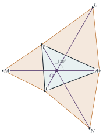

STEP III 2000，第 3 题
继续之前，请先阅读题目（原题为英文）。题目载于 STEP Support Programme 的题目资料库： step.maths.org/questions/00-s3-q3
引子
三条村庄想兴建一个把它们全部连接起来的道路网络，而且路程愈短愈好。交汇处应该设在哪里？大约在 1640 年，费马（Pierre de Fermat）提出了这样一个问题：在三角形内找出使 \(PA + PB + PC\) 最小的点 \(P\)。托里拆利（Evangelista Torricelli）解决了这个问题：从这一点望向三条边，所见的角都是 \(120^\circ\)。
本题利用复数（complex numbers）来证明这一点的一个漂亮作图法。在三角形的每条边上向外作一个等边三角形（equilateral triangle），再把每个新顶点与原三角形中相对的顶点连起来。这三条直线相交于同一点，即费马点（Fermat point），而且三条线段的长度都相同，这个长度正是道路总长的最小值。有了复数，再加上一条关于 \(e^{\mathrm{i}\pi/3}\) 的恒等式，整件事只需几行代数运算。
动笔之前
\(A\)、\(B\) 和 \(C\) 在哪里？它们的辐角（argument）是多少？\(OA\)、\(OB\) 和 \(OC\) 彼此之间的夹角是多少？
\(A = p\) 位于正实轴上（辐角为 \(0^\circ\)）。\(B = q\alpha^2 = qe^{2\pi\mathrm{i}/3}\) 的辐角是 \(120^\circ\)。\(C = -r\alpha = re^{\mathrm{i}\pi}e^{\mathrm{i}\pi/3}\) 的辐角是 \(240^\circ\)。因此原点是三角形内的一点，从这一点望向三个顶点，方向两两相隔 \(120^\circ\)，距离分别是 \(p\)、\(q\) 和 \(r\)。按照这个设置，原点就是费马点；本题要证明的，是等边三角形作图法确实能找到它。
逐步解题
阶段 1 关键恒等式
\(\alpha^3 = e^{\mathrm{i}\pi} = -1\)，所以 \(\alpha\) 是 \(z^3 + 1 = (z + 1)(z^2 - z + 1)\) 的一个根。由于 \(\alpha \neq -1\)，故 \(\alpha^2 - \alpha + 1 = 0\)，即 \(1 + \alpha^2 = \alpha\)。■
有两个推论稍后会用得着：\(1 - \alpha = -\alpha^2\)，以及 \(\alpha - \alpha^2 = 1\)。此外，\(1 - \alpha = \frac12 - \frac{\sqrt3}{2}\mathrm{i} = e^{-\mathrm{i}\pi/3}\)，即 \(\alpha\) 的共轭复数（complex conjugate）。
阶段 2 把等边三角形看成旋转
三角形 \(CAN\) 是等边三角形，顶点按顺时针方向标记。假如你站在 \(C\)，怎样从 \(A\) 走到 \(N\)？试以 \(A - C\) 表示 \(N - C\)。
按顺时针方向依次经过 \(C\)、\(A\)、\(N\)，可知点 \(N\) 是把 \(A\) 绕 \(C\) 顺时针旋转（rotation）\(60^\circ\) 而得。乘以 \(e^{-\mathrm{i}\pi/3} = 1 - \alpha\) 相当于顺时针旋转 \(60^\circ\)，所以 \[\begin{aligned} N = C + (1 - \alpha)(A - C) &= -r\alpha + (1 - \alpha)(p + r\alpha) \\ &= (1 - \alpha)p + r(\alpha - \alpha^2 - \alpha) = (1 - \alpha)p - \alpha^2r. \qed \end{aligned}\] （顺时针而非逆时针旋转，会使 \(N\) 落在 \(CA\) 的另一侧，与原点分处两边，即在三角形之外。）
用同样的方法求出 \(L\) 和 \(M\)，并利用第 1 阶段的恒等式化简。
同理，\(L = A + (1 - \alpha)(B - A)\) 及 \(M = B + (1 - \alpha)(C - B)\)： \[\begin{aligned} L &= p + (1 - \alpha)(q\alpha^2 - p) = \alpha p + (\alpha^2 - \alpha^3)q = \alpha p + (\alpha^2 + 1)q = \alpha(p + q), \\ M &= q\alpha^2 + (1 - \alpha)(-r\alpha - q\alpha^2) = q\alpha^3 + r(\alpha^2 - \alpha) = -q - r. \end{aligned}\] 再利用 \(1 - \alpha = -\alpha^2\)，可得 \(N = -\alpha^2p - \alpha^2r = -\alpha^2(p + r)\)。
阶段 3 三条通过原点的直线
比较 \(L = \alpha(p + q)\) 与 \(C = -r\alpha\)。你留意到甚么？对 \(M\) 与 \(A\)，以及 \(N\) 与 \(B\)，也作同样的比较。
\(L\) 是 \(\alpha\) 的正数倍，而 \(C\) 是 \(\alpha\) 的负数倍。所以 \(L\) 和 \(C\) 分别位于 \(O\) 的两侧，并且在同一条通过 \(O\) 的直线上；线段 \(LC\) 因而通过原点，长度为 \(|L - C| = |\alpha|(p + q + r) = p + q + r\)。
同样地，\(M = -(q + r)\) 和 \(A = p\) 都在实轴上，分别位于 \(O\) 的两侧，所以 \(MA\) 通过 \(O\)，长度为 \(p + q + r\)。而 \(N = -\alpha^2(p + r)\) 和 \(B = q\alpha^2\) 都在通过 \(O\)、方向为 \(\alpha^2\) 的直线上，并且分处两侧，所以 \(NB\) 通过 \(O\)，长度为 \(p + q + r\)。■

回顾
旋转即乘法。作等边三角形，就是把一个顶点绕另一个顶点旋转 \(60^\circ\)，也就是乘以 \(e^{\pm\mathrm{i}\pi/3}\)。
巧选坐标。把费马点放在原点，并让各顶点沿 \(1\)、\(\alpha^2\)、\(-\alpha\) 这三个方向排列，每条算式都随即大幅简化。
一条恒等式，反复使用。每一步化简都来自 \(\alpha^2 - \alpha + 1 = 0\) 和 \(\alpha^3 = -1\)。
背后的数学
为甚么 \(PA + PB + PC\) 会在各边所对的角均为 \(120^\circ\) 的那一点取得最小值？以下是一个精彩的论证。把整幅图绕 \(B\) 旋转 \(60^\circ\)，把 \(A\) 送到 \(L'\)（即 \(AB\) 上等边三角形的顶点），把 \(P\) 送到 \(P'\)。三角形 \(BPP'\) 是等边三角形，所以 \(PB = PP'\)，而且 \(PA = P'L'\)。于是 \(PA + PB + PC = L'P' + P'P + PC\)，这是一条由 \(L'\) 到 \(C\) 的路径的长度。它至少等于 \(|L'C|\)，而等号恰好在路径成一直线时成立，这种情况出现于 \(P\) 处的各个角均为 \(120^\circ\) 之时。所以总长度的最小值是 \(|LC| = p + q + r\)，与题目所得的结果一致。（这个论证成立的前提是三角形的每个角都小于 \(120^\circ\)；否则最小值会在钝角的顶点取得。）
肥皂膜与斯坦纳树
把一个装有三根小钉（代表 \(A\)、\(B\)、\(C\)）的框架浸入肥皂水中：肥皂膜会令其表面张力能量减至最小，形成三面薄壁，在费马点以 \(120^\circ\) 相交。若有更多的点，最短的连接网络是一棵斯坦纳树（Steiner tree），其中有额外的交汇点，每个交汇点都有三条边以 \(120^\circ\) 相交。一般而言，求斯坦纳树在计算上十分困难（这是一个 NP 困难（NP-hard）问题），但它们在实际应用中相当重要，例如设计道路网络、管道网络以及电脑晶片上的线路。
拿破仑定理
同一个图形中还藏着另一件瑰宝：在任意三角形的三边上所作的三个等边三角形，它们的中心构成一个等边三角形。传统上这个结果归功于拿破仑（Napoleon Bonaparte）（他是一位热衷数学的业余爱好者），不过并无证据显示这是他发现的。这个定理同样可以用复数简短地证明，用到的正是 \(1 + \alpha^2 = \alpha\)。
思维技巧
把最重要的点放在原点，并按照问题的对称性来安排各个方向。选得好，代数运算几乎可以变得轻而易举。
在这里，原点就是费马点，而三个顶点分别位于 \(-1\) 的三个立方根的方向上（或相差一个正负号）。若改用其他坐标，同样的计算会繁复得多。
延伸练习
检查字母次序。证明若各等边三角形的顶点按逆时针方向标记（即向内作），则三条直线一般不会通过 \(O\)。
拿破仑定理。证明等边三角形 \(ABL\) 的中心是 \(\frac13(A + B + L)\)。利用上文的表达式，证明三个中心构成一个等边三角形。
最小值。取 \(p = 2\)，\(q = 1.4\)，\(r = 1.1\)，分别就 \(P\) 位于每个顶点以及位于形心（centroid）\(\frac13(A + B + C)\) 的情况计算 \(PA + PB + PC\)，并验证所得的值全部大于 \(4.5\)。
等边三角形的判别法。证明 \(z_1\)、\(z_2\)、\(z_3\) 构成等边三角形（不论方向），当且仅当 \(z_1^2 + z_2^2 + z_3^2 = z_1z_2 + z_2z_3 + z_3z_1\)。
延伸阅读
Richard Courant & Herbert Robbins, What Is Mathematics?（Oxford University Press）。第 7 章讨论费马点、斯坦纳树和肥皂膜。
Liang-shin Hahn, Complex Numbers and Geometry（Mathematical Association of America）。以复数证明多个几何定理，程度正好与本节相若。
Tristan Needham, Visual Complex Analysis（Oxford University Press）。第 1 章包括拿破仑定理及其他几何结果。